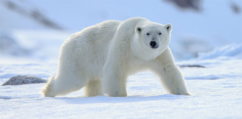
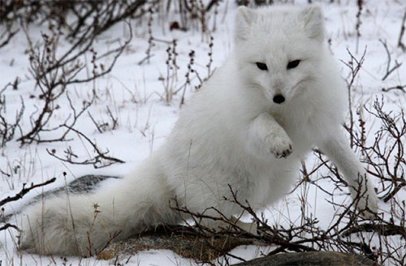
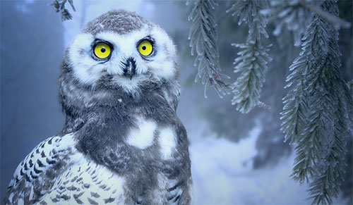

O urso polar é um dos animais do Ártico que melhor se adaptam ao frio desta região do planeta, graças ao seu pelo e a camada de gordura sob a pele que o protege. Embora se alimente de diferentes animais, suas iscas favoritas são filhotes de focas e renas. Pode ser encontrado nas regiões da Groenlândia, Islândia, Rússia, Alasca e Canadá.
A Raposa do Ártico destaca-se por seu pelo denso e branco que oferece proteção contra baixas temperaturas. Alimenta-se de pequenos mamíferos e algumas aves, embora suas presas preferidas sejam os lemingues, pequenos roedores que também vivem nas regiões árticas.
Este animal ártico é uma das poucas aves que podem ser adaptadas ao clima extremo desta região. É semelhante à coruja comum, mas com uma plumagem branca. Alimenta-se de pequenos roedores, assim como alguns descendentes de outros animais maiores. Pode ser encontrado no Canadá, na Groenlândia, na península escandinava, na Rússia, Alasca e nas regiões mais setentrionais dos Estados Unidos.
